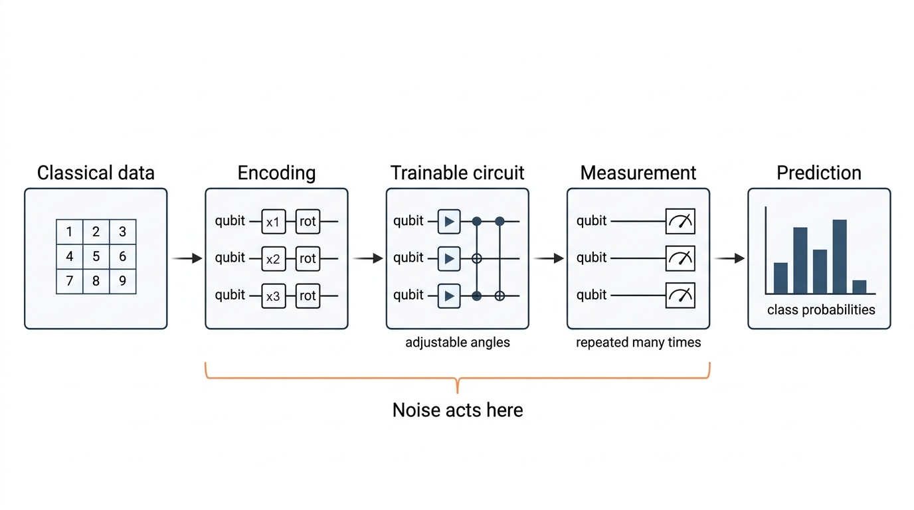
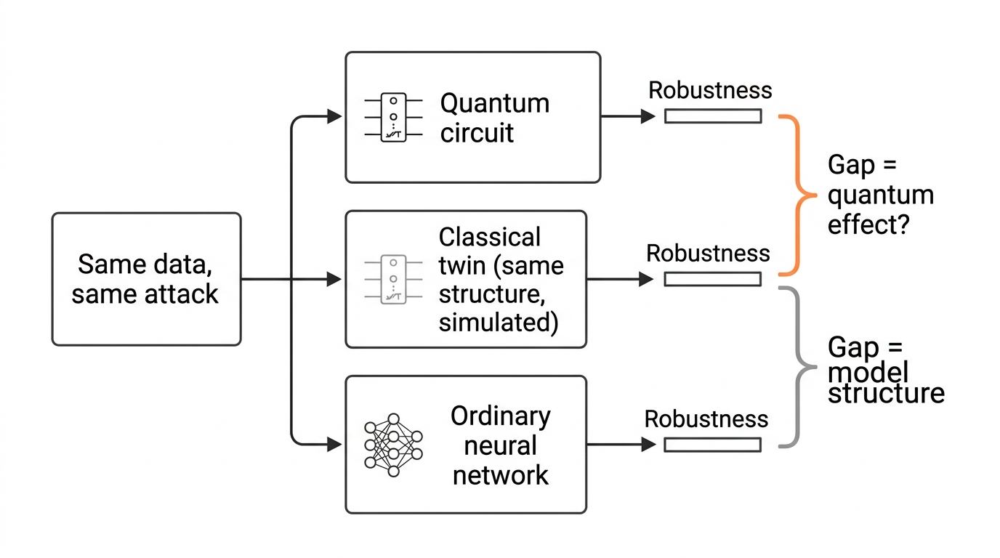

Does Quantum ML Offer Robustness Classical Models Cannot?

In one sentence
When a quantum machine-learning model turns out to be harder to fool than a classical one, is that because of something genuinely quantum — or simply because it is a differently shaped model that a classical computer could imitate just as well?
What is the problem?
Imagine two image classifiers that both recognise handwritten digits with about the same accuracy. One is an ordinary neural network. The other is a small quantum model running on a few qubits. An attacker adds a faint, carefully chosen pattern of noise to the images — invisible to a person — and the ordinary network starts calling a 7 a 1. The quantum model, on the same attack, makes noticeably fewer mistakes.
It is tempting to write the headline: "quantum models are more robust." But that headline hides a question. The two models differ in many ways at once. The quantum model is much smaller. It reads the data through a very particular encoding. Its output is averaged over many noisy measurements. Any of those could be the real reason it held up better — and most of them have nothing to do with quantum physics.
A few words of background, because they matter for everything below. A qubit is the quantum version of a bit. A bit is 0 or 1; a qubit can be in a superposition — a blend of 0 and 1 with certain weights. Several qubits together can be entangled, meaning their state cannot be described one qubit at a time. When we measure a qubit we only ever get 0 or 1, at random, with probabilities set by its state, so a quantum model has to be run many times and its answers averaged. And today's hardware is noisy: every operation is slightly imperfect and the qubits slowly lose their quantum behaviour.
This open problem asks for a clean separation: which part of the robustness we see in quantum ML comes from the quantum representation itself, and which part would appear in any classical model with the same structure?
Why does it matter?
Quantum hardware is expensive and scarce. If we are going to argue that some tasks deserve it, the argument needs to be honest:
- if the robustness is a structural effect, we can get it far more cheaply by building that structure into a classical model — a useful result in itself,
- if it is a quantum effect, it would be one of the few concrete, near-term reasons to use quantum models for learning, beyond speed,
- security-critical users (sensors, communication, finance) need to know whether a claimed robustness will survive when the hardware, the encoding or the attacker changes,
- and the field as a whole benefits from comparisons that cannot be explained away later as an unfair baseline.
What does a quantum model actually look like?
Most quantum ML today uses a hybrid design often called a variational quantum classifier. It is easier to see than to describe:

Each stage is a possible source of "robustness" that has nothing to do with quantum advantage. The encoding may squash large input changes into small rotations. The circuit may have very few parameters, so it simply cannot learn the fragile, fine-grained features attackers exploit in big networks. And averaging many noisy measurements smooths the output, a bit like adding random noise on purpose — a known classical defence.
The key idea: compare against a classical twin
The way to untangle this is to change one thing at a time. For a small quantum model, we can usually simulate it exactly on an ordinary computer. That gives us a classical twin: a model with the same encoding, the same structure and the same number of parameters, computed without any quantum hardware. We can then also compare against an ordinary neural network of similar size.

The important twist is that, for small models, the quantum circuit and its exact classical simulation compute the same function. If they behave differently under attack, the difference has to come from the hardware — mostly noise and the randomness of measurement. So for small models the honest question becomes: is there anything left once structure and noise are accounted for? For large models that cannot be simulated, the question is open in a deeper way, because there we cannot build the twin at all.
Why is it hard?
- Fair baselines are hard to define. "Same size" can mean same number of parameters, same number of operations or same accuracy. Each choice can flip the conclusion.
- Small models are easy to simulate. The quantum models we can run today are small enough to copy classically — which makes a genuinely quantum effect hard to isolate by definition.
- Noise helps and hurts. Random noise can blur an attacker's carefully tuned pattern, which looks like robustness, but it also lowers accuracy. Robustness bought by lower accuracy is not a free lunch.
- Attacks are often too weak. Quantum models can be hard to differentiate on real hardware, so attacks that rely on gradients may simply fail to find the weak spots. That is robustness of the evaluation, not of the model.
- Theory points both ways. Some results suggest quantum classifiers become more vulnerable as they grow, because very high-dimensional state spaces are easy to nudge; others show that certain noise can give provable protection.
What has been tried so far
- Head-to-head benchmarks of small quantum classifiers against classical ones under standard attacks. Useful first evidence, but usually without a structure-matched classical twin.
- Theoretical vulnerability results showing that, as the number of qubits grows, small perturbations can be enough to flip a quantum classifier's answer — the quantum version of "high dimensions make attacks easy."
- Noise as a defence: work showing that some kinds of hardware noise act like the randomised smoothing used in classical ML, giving a guaranteed (if modest) robustness radius.
- Formal verification methods that check, for a given quantum classifier and input, whether any perturbation within a budget can change the output.
- Careful benchmarking studies that compare quantum models to well-tuned classical ones and often find the classical models match or beat them — a reminder that baselines matter.
- Encoding studies showing that how data is loaded into qubits largely decides what functions a quantum model can represent — which suggests the encoding, not "quantumness", may drive much of the behaviour.
What I find missing is a study that, on the same data and the same attacks, systematically separates the three ingredients — structure, noise and quantum representation — and reports how much of the robustness each one explains.
How I would approach it
- Pick a few small, well-understood datasets and build a quantum classifier for each, plus its exact classical twin and a size-matched ordinary network.
- Attack all three with the same strong attacks, including ones that do not need gradients, so that weak attacks cannot masquerade as robustness.
- Run the quantum model in three settings: perfect simulation, simulation with realistic noise, and, where possible, real hardware. This isolates what noise contributes.
- Then give the classical twin the same benefits — the same encoding squashing, the same amount of added randomness — and check whether the remaining gap closes.
- Finally, scale up the number of qubits as far as simulation allows, to see whether any leftover gap grows, shrinks or disappears.
My working hypothesis is that most of today's reported robustness is structural or noise-driven. That would not be a disappointing result — it would tell us exactly which quantum ingredient is worth looking for next.
Questions still open
- Once structure and noise are matched, is there any robustness left that a classical model cannot reproduce?
- What is the right notion of a "fair" classical baseline for a quantum model?
- Is noise-driven robustness worth the accuracy it costs, compared with classical smoothing?
- Does robustness survive when models grow too large to simulate — or does vulnerability grow faster?
- Is "robustness" even defined the same way for both kinds of model? (see OP-08)
- Even if neither model is more robust overall, do they fail on different inputs? (see OP-09)
This problem is the first of three on quantum and AI. OP-08 asks what an attack even means once states, measurement and noise are part of the model, and OP-09 asks whether quantum and classical models make different mistakes that could be used together. It also connects to the representation questions in OP-02.
Work on this together
If you work on quantum machine learning, adversarial robustness or careful benchmarking — or you have access to quantum hardware and want to test a hypothesis rather than chase a headline — I would love to hear from you. Telling me the framing is wrong is just as welcome.
Reach out about OP-07Further reading
- Biamonte et al. — Quantum Machine Learning (Nature 2017)
- Havlíček et al. — Supervised Learning with Quantum-Enhanced Feature Spaces (Nature 2019)
- Schuld, Sweke & Meyer — Effect of Data Encoding on the Expressive Power of Variational Quantum Machine Learning Models (Physical Review A 2021)
- Liu & Wittek — Vulnerability of Quantum Classification to Adversarial Perturbations (Physical Review A 2020)
- Lu, Duan & Deng — Quantum Adversarial Machine Learning (Physical Review Research 2020)
- Du et al. — Quantum Noise Protects Quantum Classifiers Against Adversaries (Physical Review Research 2021)
- West et al. — Towards Quantum Enhanced Adversarial Robustness in Machine Learning (Nature Machine Intelligence 2023)
- Bowles, Ahmed & Schuld — Better Than Classical? The Subtle Art of Benchmarking Quantum Machine Learning Models (arXiv 2024)